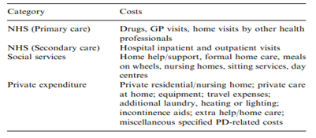
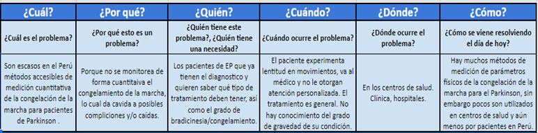

1. Marco Teórico
1.1 Definiciones básicas
El Parkinson es una enfermedad neurodegenerativa del sistema nervioso central, en la cual se presenta una muerte temprana de neuronas dopaminérgicas en los núcleos del tronco cerebral, principalmente en la sustancia negra. Dicho desorden en los niveles de dopamina genera la aparición de síntomas motores y no motores como alteraciones gastrointestinales; alteraciones en patrones del sueño, características neuropsiquiátricas y disminución del olfato.
Los síntomas motores experimentados son : temblor (62.3 %), bradicinesia (15.9 %), rigidez (12.6 %), dificultad para caminar (8.1 %), alteración del equilibrio (1.6 %) y caídas (1.6 %) [1]. Adicionalmente, se conoce que la congelación de la marcha tiene una incidencia del 21 al 27% en etapas tempranas de la enfermedad, mientras que aumenta hasta el 80% en etapas más tardías [2].
Esta enfermedad presenta un aumento de incidencia significativo a partir de los 65 años llegando a un pico de probabilidad a los 80 años (3%). Además, es la segunda enfermedad neurodegenerativa más común después del Alzheimer [3].
Etapas de la enfermedad
La clasificación de la enfermedad se realiza de manera cualitativa, sin parámetros definidos.
- Etapa Inicial
- Etapa Intermedia
- Etapa Avanzada
- Etapa Terminal
Puede ser manejada por un personal no especializado en la enfermedad, en controles periódicos. El paciente conserva su autonomía, es decir no se ven afectadas sus capacidades para cumplir con su trabajo.
Requiere control médico continuo por un personal especializado. Requiere terapia. En el paciente muestra un evidente impedimento y complicaciones motoras (congelamiento de la marcha).
Además de las complicaciones de la etapa previa, el paciente requiere una atención multidisciplinaria, ya que cada vez más sistemas y órganos se ven afectados. Gran parte requiere cirugía. En pacientes las complicaciones son más notorias y un característico problema de deglución.
Necesita hospitalización. En esta etapa el paciente puede quedar postrado en cama y/o necesitar un tubo de alimentación.
1.2 Análisis de los impactos
1.2.1 Económico
Los pacientes con Parkinson sufren de una carga económica significativa provocada por la enfermedad, tanto de forma directa (medicamentos y recursos médicos) como de forma indirecta (costos de mortalidad, pérdida de productividad y la contratación de cuidadores) [4]. Por otro lado, la enfermedad afecta a varios sistemas, por lo cual, el tratamiento requiere de un equipo multidisciplinario de profesionales, lo que implica una mayor inversión [5].
Por otro lado, la carga económica varía dependiendo del país. Por ejemplo, se estimó en el 2007 que la carga económica en los Estados Unidos fue de 23 mil dólares que, si lo comparamos con el sueldo mínimo de 12 mil dólares, no cubre todos los gastos, inclusive se debe duplicar para llegar a la cifra, de los cuales la pérdida de productividad y la contratación de cuidadores significa casi la mitad del costo.
Asimismo, se realizó un estudio en el Reino Unido el cual analizó la carga económica dependiendo del nivel de atención. El estudio mostró que, en pacientes jóvenes, el Servicio Nacional de Salud (NHS por sus siglas en inglés) significó el mayor porcentaje de gastos. A su vez, se demostró que los gastos incrementan significativamente a medida que la enfermedad progresa [6].
Si nos situamos en Latinoamérica, en Brasil se estimó anualmente US$5.853,50 por persona, incluidos US$3.172,00 en costos directos (médicos y no médicos) y US$2.681,50 en costos indirectos [7]. En Colombia, en el año 2015 se estimó que la mediana anual por paciente según las aseguradoras fue de US$1.576 [8]. Para el caso de Perú, no se encontró datos aproximados, sin embargo, según las entrevistas realizadas, se comentó que los precios solamente en medicamentos son aproximadamente de 600 a 716 soles por mes en personas que ya tienen la enfermedad de 5 años a más
1.2.2 Político
En Perú, el 30 de diciembre de 2016 se firmó una resolución directoral para aprobar la “Guía de Práctica Clínica de la Enfermedad de Parkinson” con el objetivo a que contribuya a estandarizar la atención clínica de las personas que padecen de la enfermedad en los diferentes estadios para su adecuada y oportuna atención. Sin embargo, la guía no garantiza una evolución favorable de los pacientes, asimismo, no le concierne la organización ni la planificación en los diferentes establecimientos de salud que tratan Parkinson [9].
1.2.3. Social
Los pacientes pueden llegar a sufrir depresión, apatía, agotamiento y aislamiento social. Es necesario un apoyo psicológico importante y proporcionar ayuda social e información. La manera en que todos estos aspectos determinan el impacto en la familia viene condicionada fundamentalmente por la edad del afectado. En el caso de los pacientes jóvenes es más traumático, ya que implica aspectos laborales y económicos más problemáticos [10]. Los cambios de ánimo pueden empeorar el funcionamiento, llevando a un decrecimiento de la calidad de vida.
1.2.4. Personal
Las personas con la enfermedad de Parkinson sufren principalmente de temblores en las extremidades, cabeza o mandíbula. Además, presentan rigidez muscular y lentitud de movimiento, así como mala coordinación y balance, experimentando caídas frecuentes. Es por esto que los pacientes de Parkinson tienen dificultad para desempeñar trabajos físicos. El 30% de pacientes sufre de psicosis, muchos pacientes desarrollan demencia después de 10 años de los síntomas motores. Alrededor del 50% de pacientes con Parkinson en cualquier estadio de la enfermedad sufren de depresión, siendo un principal síntoma emocional y comúnmente confundido con hipotiroidismo [11]. Los problemas de sueño nocturnos ocurren del 60 al 98% y está relacionado con la severidad de la enfermedad y tratamiento con levodopa. Existe una prevalencia de disfagia que varía entre el 18.5 y 100% de pacientes con Parkinson, la neumonía aspirativa es la mayor causa de muerte: (4-30%) [11].
1.3. Análisis de las causas
La etiología de la enfermedad no se conoce del todo, pero hay factores de riesgo que predisponen a una persona a sufrir de la enfermedad.
1.3.1. Factor de edad
Es el factor de riesgo más importante para la enfermedad, en personas mayores de 60 años tienen 1.0% de incidencia y del 3.0% en personas mayores de 80 [3].
1.3.2. Factor de sexo
El sexo masculino presenta un riesgo moderado, con una razón de 1.9:1[3].
1.3.3. Factor Ambiental
Pesticidas y Vida Rural son un factor a tener en cuenta. Algunos químicos se relacionan con Parkinson anómalo, como: Anonacina y 1-metil-4- fenil tetrahidropiridina (MPTP) causan un Parkinson atípico [3].
1.3.4. Factor Genético
Cuando se asocia el factor genético con un factor ambiental la enfermedad tiene una evolución acelerada. Algunos genes están asociados fuertemente al desarrollo e incidencia de la enfermedad. Pero este solo representa el 1%, el resto son causas incidentales [3].
1.4. Definición del usuario
Paciente de 45 a 80 años diagnosticado anteriormente con la enfermedad neurodegenerativa de Parkinson que actualmente se encuentra en estado avanzado y reside en zonas urbanas de la ciudad de Lima.
1.5. Prevalencia en el Perú
En el Perú, el Parkinson afecta aproximadamente a unas 30 mil personas y cada año se estima que hay tres mil nuevos casos de personas con indicios de esta enfermedad. En la población mayor de 65 años la prevalencia es de 1/100 habitantes con una distribución homogénea en el país. El 90% de los casos se presenta después de los 40 años.
Durante los últimos años, no hubo estudios prevalentes sobre la enfermedad en Perú. Sin embargo, se encontró que, en una muestra de 1740 personas en la provincia de Ucumayo - Junin en el año 2003, 4.4% fueron positivos a la enfermedad del Parkinson (EP) en la primera fase y examinados por un neurólogo en la segunda fase de estudio [12].
No se tienen cifras oficiales o exactas, el Instituto Nacional de Ciencias Neurológicas (INCN) estimó en el año 2014 que el 1% de la población en general tenía enfermedad de Parkinson, es decir un aproximado de 300 mil personas. En Perú, se estima que para el año 2030 serán 2 015 065 las personas con enfermedad de Parkinson y la tasa de mortalidad de 25,45 por cada 100 mil personas. Cada año se notifican entre 2000 y 3000 casos nuevos en nuestro país, y en la ciudad de Lima serían aproximadamente 10 mil personas con esta enfermedad [13].
2. Planteamiento del problema
2.1 Entendiendo el problema
Después de analizar todos los factores que implica tener Parkinson, se toma en cuenta que tanto el diagnóstico como el tratamiento se dan de forma subjetiva. Asimismo, mencionar que la enfermedad es muy costosa solamente considerando fármacos, por lo que es de vital importancia brindar un eficaz tratamiento ya que conforme pase el tiempo los pacientes se van a caracterizar por su lentitud y torpeza debido a los síntomas de la enfermedad, hasta podrían sufrir severas caídas u otras complicaciones. Se plantearon dos posibles problemas principales. El primero, sobre la falta de métodos cuantitativos para el diagnóstico de la enfermedad, se consideró ello ya que, las opiniones a las formas de evaluar dependen netamente del médico tratante y suele suceder que los pacientes y/o familiares se encuentran en un estado de negación a la enfermedad por no existir un documento certero que verifique el diagnóstico del doctor, lo cual crea la necesidad de la búsqueda de más especialistas, así dilatando el tiempo para empezar su tratamiento.
Por otro lado, el segundo problema se trata acerca de la falta de métodos de monitoreo cuantitativo después del diagnóstico, se consideró ello ya que, si bien es cierto que la persona con EP tiene un control ya sea mensual, semanal o anual con su médico, este no sabe cómo ha ido progresando la enfermedad; qué síntomas se han agudizado más o si ha tenido complicaciones como caídas que provocan lesiones. El médico se rige de ciertos parámetros cualitativos que compara desde la última consulta con la reciente. Por ello, datos cuantitativos que verifiquen su opinión sería de gran ayuda para el paciente. Asimismo, si contemplamos el análisis de sólo un síntoma sería el del congelamiento de la marcha ya que es progresivo pues aumenta su incidencia estando en etapas más tardías impidiendo iniciar la marcha, girar, cambiar de dirección y velocidad, entre otros aspectos [14] , de igual manera, a largo plazo se desarrolla en el 80% de pacientes [2] con EP provocando caídas leves o graves, siendo el motivo por el cuál la persona necesita asistir al hospital más seguido, y según la entrevista dada con el médico neurólogo, es la queja más común entre los pacientes con EP.
Gracias a esta tabla y junto con la información del marco teórico, se decidió optar por la segunda problemática debido a que el Parkinson es una enfermedad sin aún una explicación o etiología específica, el diagnóstico se torna más complicado y es necesario la participación de más áreas de investigación. Por otro lado, hay una mayor cantidad de información acerca del congelamiento de la marcha (FoG por sus siglas en inglés), además que dicha información está relacionada a parámetros medibles.
Con el fin de indagar más en la problemática mencionada, a continuación, se presenta la herramienta 5HW.
A partir de la herramienta de 5WH, se concluyó que el congelamiento de la marcha es un síntoma que si no se monitorea puede desencadenar accidentes graves en los pacientes. También, da una buena ventana de oportunidades para el monitoreo del progreso del Parkinson como tal, ya que tienen relación con parámetros medibles como la aceleración y giro.
Teniendo esa idea en mente, veremos si se adecúa a las necesidades del paciente realizando un par de entrevistas, tanto a pacientes como a un médico neurólogo general. Anexo I,II,II.
Se entrevistaron 2 personas con Parkinson donde claramente se observa que coinciden cuando se habla sobre la subjetividad del diagnóstico y el monitoreo del tratamiento, pues comentan que en sus primeros años cambiaron constantemente de doctor ya que, la medicación dejó de hacer efecto debido a que desarrollaron resistencia a esta. A partir de eso, surgió la preocupación de que la enfermedad esté avanzando y que el paciente no esté estabilizado, entonces la intensidad y/o frecuencia de sus síntomas, como la rigidez, el congelamiento de la marcha y discinesias aumentaban.
De igual manera, se evidenció la constante duda que tenían los pacientes acerca de la evolución de la enfermedad, eso sumado a que, con el tiempo, si es que el tratamiento no cambiaba o se adecuaba a ellos, los efectos de este cesaban. Por ello, podría resultar importante el diseño de una solución que permita un monitoreo más preciso de los síntomas, asistiendo al médico en su trabajo.
Asimismo, durante la entrevista con el doctor, él comenta que una de las quejas más comunes en los pacientes con EP es el congelamiento de la marcha. Además de mencionar que es importante tratar este síntoma ya que puede generar caídas graves, las cuales terminan en complicaciones, como fracturas o traumatismos encefalocraneanos. Asimismo, mencionó que a medida que la enfermedad avanza, el congelamiento es más frecuente.
A través del mapa de interesados pudimos definir con mayor claridad personas y entidades importantes a tener en cuenta en el diseño de una solución. Los interesados cercanos son los familiares, amigos y su doctor de cabecera. Además, tenemos los interesados externos que son los centros de salud, el MINSA y el Instituto de Salud Neurológico, estos establecimientos son esenciales ya que de estos, en la mayoría de casos, determinan la disponibilidad y oportunidades de tratamiento. Por último, tenemos a los interesados públicos en donde se encuentran los investigadores de la enfermedad y la Asociación Peruana de Lucha contra el Parkinson, los cuales buscan difundir mayor información acerca de la enfermedad y, a su vez, incentivar e invertir a crear nuevas propuestas de solución.
2.2 Observando el problema
2.2.1. Mapa de empatía
Para observar el problema correctamente debemos entender a detalle las quejas y necesidades del usuario. Esto se logró planteando preguntas y respondiendo a estas teniendo en cuenta su contexto como paciente de Parkinson de la tercera edad y las entrevistas realizadas.
2.2.2. Perfil del usuario
Se planteó un usuario con un contexto basado en las entrevistas de las personas con Parkinson que entrevistamos. Es por ello que se describieron influencias comunes, tendencias algo realistas; las tareas del usuario son de una persona jubilada con aspiraciones. Las frustraciones son una recopilación de entrevistas. El caso de uso es una suposición idealizando nuestra propuesta, del mismo modo en la parte de ganancias es lo que nuestra tentativa solución quiere abarcar.
2.3 Definiendo el problema
2.3.1. Como podríamos nosotros

Se usó la herramienta del “¿Cómo podríamos?” para delimitar el problema en 3 opciones más específicas. Todas van enfocadas en el monitoreo del congelamiento de la marcha; sin embargo, se diferencian en el lugar y en la forma de recolección de datos: en consulta, en su vida diaria y procurando que sea entretenido.
En la primera propuesta, se estableció que sea durante consulta y que la finalidad principal sea ubicar correctamente al paciente en el estadio que se encuentra, para así, suministrarle la dosis correcta de medicamento; no obstante, este enfoque no es muy sostenible, ya que la medicación depende también a la resistencia al medicamento que desarrolla el paciente. Con respecto al segundo y tercer enfoque, se observó que ambas ideas podían ser llevadas simultáneamente ya que una trata de la frecuencia y el lugar de recolección de datos; mientras que la otra, acerca de la interacción dispositivo-paciente.
En base a lo previamente explicado, se concluyó que el problema es:
“¿Cómo podríamos diseñar un dispositivo que permita el monitoreo del congelamiento de la marcha del paciente para saber el progreso de la enfermedad, mediante la incidencia y las características de los parámetros motores?”
2.3.2. Definir el éxito
Definir qué es el éxito nos ayudó a tener claro cuáles son las partes más importantes del problema que debemos abordar en una posible solución. Tomamos en cuenta interesados como el médico, el paciente, centros de salud, instituciones de investigación y el equipo de diseño. Ordenamos las respuestas en orden de relevancia, siendo la más relevante la primera y la menos relevante la última. Gracias a esto sabemos que es de mayor importancia que el dispositivo mida parámetros relevantes para definir el grado de congelamiento de la marcha en el paciente y que sea accesible para su posible implementación y su fabricación.